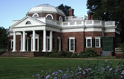
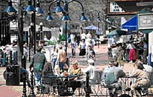

Conference Home

About the Venue
AOSD.09 will be held at the University of Virginia in Charlottesville, Virginia, USA.
| Read about Charlottesville, Virginia (the site of AOSD.09) in a New York Times article 36 Hours in Charlottesville, Va. that highlights the architecture, entertainment, and outdoor activities around Charlottesville. | |
The University of Virginia
Founded, designed and built in 1819 by Thomas Jefferson, the third president of the United States of America, and opened in 1825, the University of Virginia is an architectural, historical, and academic gem in the U.S. University system. Jefferson's original campus is widely recognized as among the most important architectural artifacts in the United States, embodying in physical form Jefferson's enlightenment notions of secular education in support of a democratic republic. Today, the University of Virginia is ranked as one of the top two public universities in the United States.
Explore the University of Virginia Online
Wikipedia: The University of Virginia
Charlottesville, Virginia
Charlottesville, Virginia, is a beautiful small city about 25 miles east of the Blue Ridge Mountains. It has one of the most successful and longest (spanning eight blocks) downtown pedestrian malls in the United States, as well as many fine restaurants, theaters, sports and entertainment venues and other cultural and environmental attractions. The Charlottesville area is where the homes of three U.S. Presidents are located: James Madison, James Monroe, and Thomas Jefferson's Monticello (pictured below).
Wikipedia: Charlottesville, Virginia
Thomas Jefferson's Monticello
|  |  |